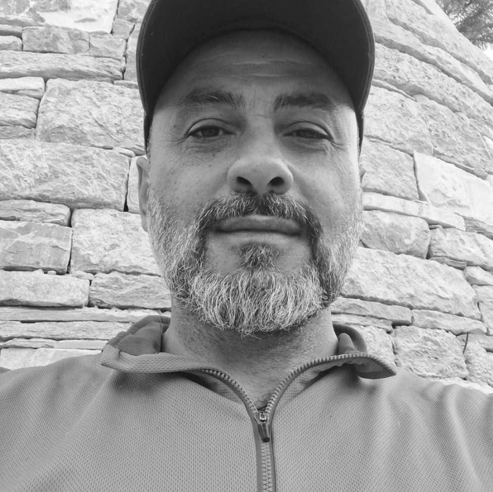
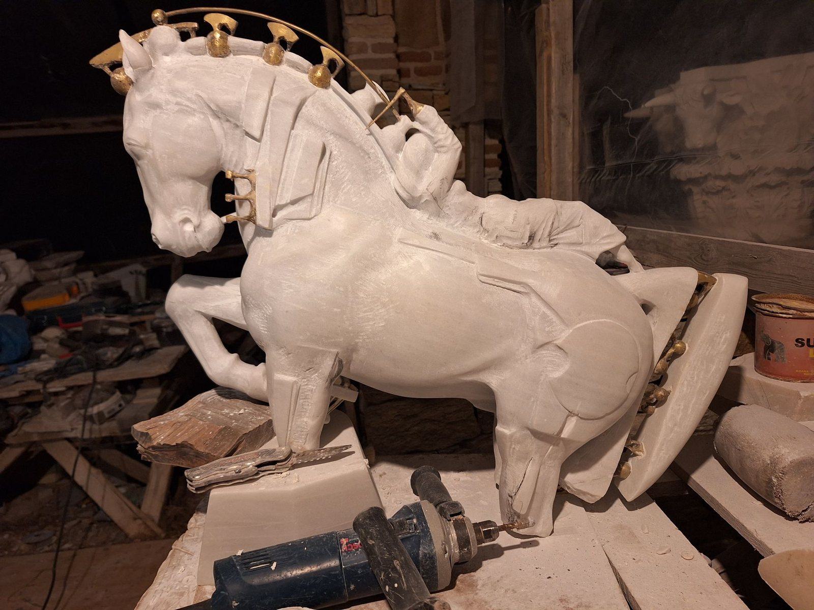
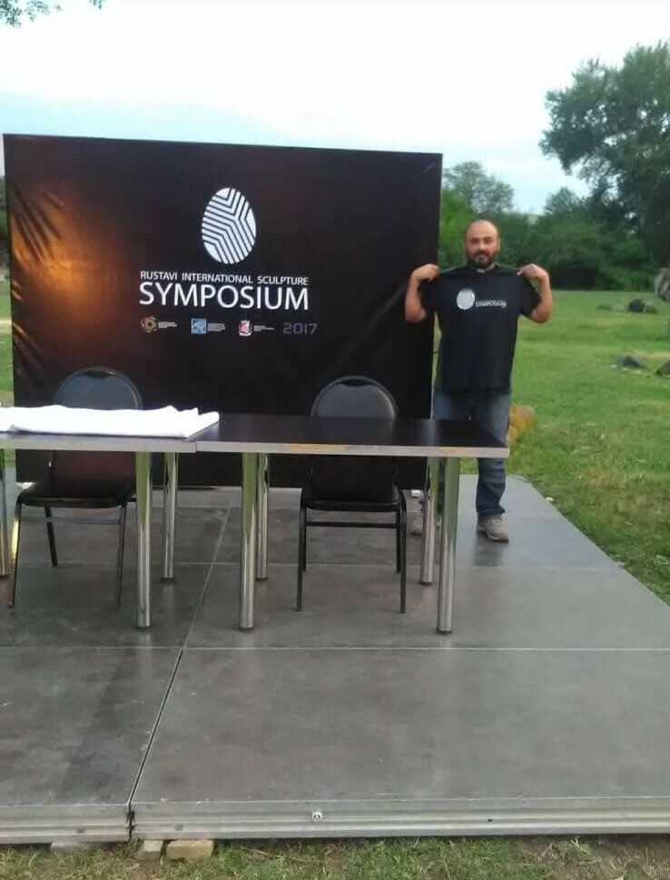

About the artist
Irakli Athoneli
Sculptor and stone carver, born in Georgia, working in Athens.
Irakli Athoneli is a sculptor and stone carver based in Athens, Greece, originally from Georgia. He studied at the Tbilisi State Academy of Fine Arts, where he earned a Master’s degree in Sculpture and Fine Art; his diploma work, a female torso, was intentionally left unfinished — in a state of becoming.
He works in marble, dolomite, granite, obsidian and mixed media: public commissions and architectural stonework, capitals for Mount Athos, portrait studies and works on paper. His sculptures are held in private collections in the United States, Canada, Romania, Russia, Greece and Georgia.
His work is about the weight of the material and the patience it takes for a form to emerge from the block.
In brief
The essentials
- Born
- Georgia
- Studio
- Athens, Greece
- Education
- MA, Sculpture & Fine Art — Tbilisi State Academy of Fine Arts
- Materials
- Marble, dolomite, granite, obsidian, mixed media
- Collections
- United States, Canada, Romania, Russia, Greece, Georgia
Studio & symposiums
From the block


Recognition
Awards & symposiums
Participant in international sculpture symposiums and art festivals in Georgia and Greece.
- 2014First Prize, Best Stone SculptureGallery Muza, Tbilisi — for Warrior
- 2017Symposium AwardRustavi International Sculpture Symposium, Georgia — for Family
- 2014International Art FestivalKutaisi, Georgia — Freedom
- —Second Prize, Open CompetitionAkhaltsikhe — “Heroes Who Sacrificed Themselves for the Homeland”